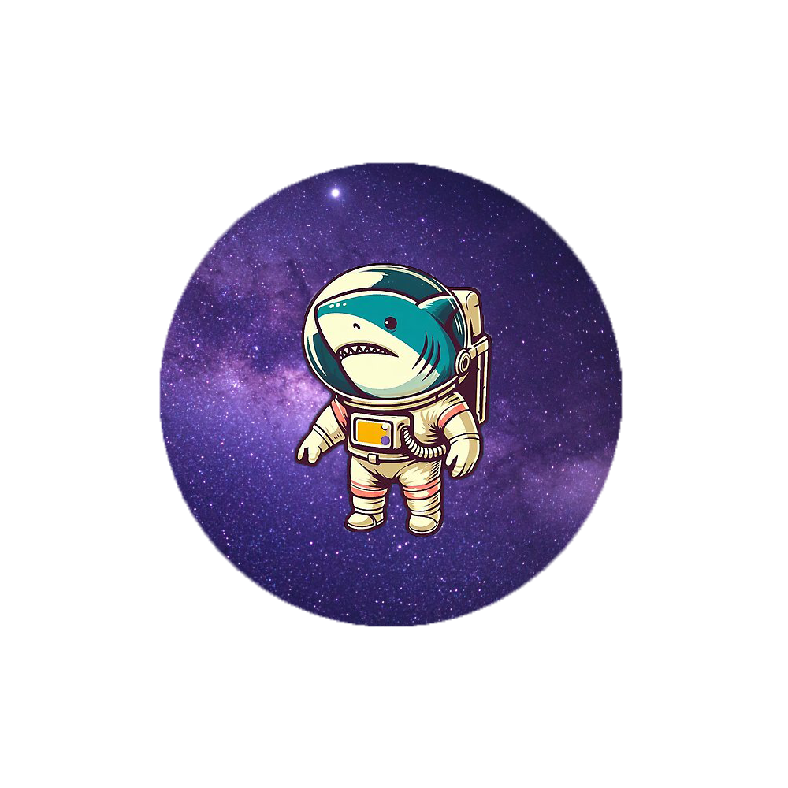

Estructura del Sol
Atmósfera del Sol
Curiosidades del Sol
Nosotros
Sergio Burgos
Eduardo Vargas
Fernanda Chulim
Quintana Roo, México
Tel. +52 998 404 6104
eduardoantoniovargas.dgb@colegioboston.edu.mx Referencia